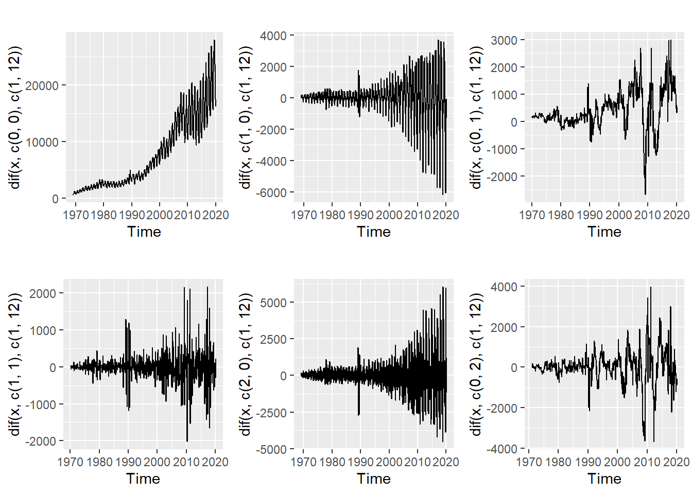

Para hacer un tratamiento estadístico más riguroso en este libro necesitamos una definición más técnica de serie temporal. Desde este punto de vista definimos un proceso estocástico como una sucesión de variables aleatorias con una distribución de probabilidad dada indexadas por el tiempo. Cada una de las variables aleatorias del proceso tiene su propia función de distribución de probabilidad y pueden o no estar correlacionadas entre sí. Una serie temporal es una realización de dicho proceso estocástico, es decir, una sucesión de valores que son extraídos aleatoriamente de la distribución correspondiente. En el panel superior de la Figura 2.1 se observa un proceso estocástico en el que la ley de probabilidad se mantiene constante en el tiempo, aunque la realización concreta (puntos) no son una constante. En el panel inferior se puede ver lo complicado que puede ser un proceso estocástico, puesto que en ese caso la función de distribución es distinta para cada momento del tiempo, y ¡además el intervalo de muestro no es fijo!
Figura 2.1: Dos procesos estocásticos con diferentes características.
Borra toda la memoria. Carga las herramientas del libro. Simula un ruido blanco normal de dimensión 300 con media 100, represéntala gráficamente. Comprueba que la media es 100.
En R puedes usar las funciones rm, library(UComp), library(ggplot2)), rnorm, autoplot y sumStats. autoplot función solo representa objetos de series temporales, que puedes convertir con la función as.ts.
En Python tendrás que usar, por ejemplo, from UComp import *, np.random.normal, plt.plot, sumStats. Para convertir matrices o vectores numpy a series termporales de pandas puedes usar la función ts.
En MATLAB/OCtave puedes usar randn, plot y sumStats.
Como se ve el p-valor del test de que la media es cero es 54%, lo que indica que con un amplio margen no se rechaza la hipótesis de que la media es cero (la variable original tiene media 100).
En la vida real vamos a tener por lo general una sola realización de cada proceso estocástico, que de hecho son los datos observados. Es decir, si tenemos los datos mensuales de ventas de una empresa, cada dato es una realización de una función de distribución que desconocemos y que puede estar cambiando en el tiempo. Esto limita mucho el análisis, puesto que, si tuviéramos muchas realizaciones del mismo proceso estocástico podríamos estimar las leyes de probabilidad con mucha precisión. Normalmente, al disponer solo de una realización, la falta de información la tendremos que suplir con un cúmulo de supuestos sobre dichas distribuciones de probabilidad.
Con estas definiciones, la predicción implica continuar la sucesión de variables aleatorias basándonos en las propiedades observadas en las anteriores. De esta forma podemos predecir toda la función de probabilidad de la variable, o solamente algunos momentos de la distribución (media, la mediana, la moda, la varianza, etc.). Así podemos obtener predicciones de toda la densidad, solo predicciones puntuales (normalmente la media o la mediana) o predicciones puntuales con algún intervalo de confianza o predicción.
Predicción con inteligencia artificial
Aunque es evidente que hay similitudes, la predicción en el contexto de sección cruzada (análisis de imagen, sonido, etc.), tan habitual en nuestros días por la abundancia de aplicaciones de inteligencia artificial, es radicalmente diferente a la predicción de lo que puede suceder en el futuro en un sentido temporal. Efectivamente, alguien puede entrenar un modelo con millones de caras diferentes para reconocimiento facial y luego puede predecir, es decir, reconocer, que un objeto nuevo presentado al modelo es una cara o reconocer a una persona concreta. Para que esto pueda ser operativo se supone que las caras que puedan aparecer nuevas serán como las anteriores con las que se ha entrenado el modelo. Sin embargo, cuando se pretende predecir algo en el dominio del tiempo puede suceder que el futuro de un determinado fenómeno pueda resultar totalmente diferente a lo que ha sucedido hasta ahora, de forma que el modelo no servirá para nada.
Desde luego, hay determinadas variables para las que el supuesto de que el futuro es semejante al pasado suena plausible, por ejemplo, en el caso de la radiación solar, que es un fenómeno físico. Pero en series de naturaleza económica, por ejemplo, el tema es bastante más incierto, piénsese por ejemplo, cómo influyen las turbulencias financieras, guerras o pandemias en las variables económicas. Desgraciadamente, hasta hace poco estos fenómenos los considerábamos poco probables ne Occidente.
Sea como fuere, si queremos predecir el futuro no tendremos más remedio que suponer que el futuro será como el pasado. Si hay dudas más que razonables de que esto sea cierto, entonces, lo más prudente será utilizar planteamientos alternativos a los que se presentan en este libro.
2.1.1 Momentos de procesos estocásticos
Se pueden calcular momentos de procesos estocásticos de forma sencilla, basándonos en los momentos de las funciones de distribución. Suponiendo que \(Y(t)\) es un proceso estocástico, los que más nos van a interesar son:
Media: \(E[Y(t)]=\mu_y(t)\). Es la esperanza matemática.
Varianza: \(Var[Y(t)]=\sigma^2_y(t)=E[Y(t)^2]-E[Y(t)]^2=E[Y(t)^2]-\mu_y(t)^2\). Es la esperanza matemática de las desviaciones respecto a la media.
Autocovarianzas: \(\gamma_{i-j}=E[Y(i)-\mu_y(i)]E[Y(j)-\mu_y(j)]\). Mide la covarianza en dos momentos del tiempo. Dada esta definición, las autocovarianzas son simétricas, \(\gamma_{i-j}=\gamma_{j-i}\). Cuando \(i=j\), \(\gamma_0=Var[Y(t)]\), la autocovarianza de orden cero es la varianza. Las autocorrelaciones son las autocovarianzas normalizadas por la varianza, \(\rho_{i-j}=\gamma_{i-j}/\gamma_0\), de forma que tomará valores entre -1 y 1, indicando correlación perfecta en los extremos o no autocorrelación en caso de que valga cero.
2.1.2 Algunos procesos estocásticos
Ya estamos en condiciones de analizar algunos procesos estocásticos sencillos que usaremos en el futuro.
Ruido blanco: se trata de un proceso puramente aleatorio. Es una simple sucesión de números aleatorios extraídos de alguna función de distribución. Se asume que tendrá media y varianza constante. Lo único significativo de este proceso es la media, por lo que la predicción óptima es su media, puesto que todo lo que sucede alrededor de la media es impredecible por definición.
Paseo aleatorio (Radom Walk o RW en inglés): se trata de un proceso discreto en la variable tiempo (\(t\)) que obedece a la ecuación \(y_t=y_{t-1}+a_t\), siendo \(a_t\) un ruido blanco. Es decir, el valor presente es el mismo que el anterior con una perturbación aleatoria que puede ser positiva o negativa. La predicción óptima de este modelo será el valor anterior debido a que la mejor predicción de \(a_t\) es su media. Cuando se predicen varios periodos hacia adelante la mejor predicción es el último valor observado.
Paseo aleatorio con deriva: se trata de un proceso que obedece a la ecuación \(y_t=c+y_{t-1}+a_t\), siendo \(c\) una constante. Es igual que el anterior pero con una constante que le imprime una pendiente lineal ascendente o descendente si el signo de la contante es positivo o negativo, respectivamente. En efecto, si llamamos \(T\) al momento de la última observación disponible, la predicción óptima de la variable \(y_t\) para el momento \(T+i, i=1,2,\dots,l\) con la información hasta la observación \(T\) se denota por \(\hat{y}_{T+i|T}\) y se puede obtener aplicando recursivamente la fórmula del modelo:
Karl Pearson en una carta a la revista Nature en 1905 asemejó el modelo del paseo aleatorio a la trayectoria de un borracho. Esto se debe a que la posición del pobre hombre es la anterior con una pequeña modificación en su entorno que es puramente aleatoria debido a su estado de embriaguez.
La Figura 2.2 muestra la predicción de estos procesos estocásticos partiendo de distintos orígenes de predicción. Las predicciones se muestran en color rojo y los datos en negro. El panel superior izquierdo muestra el caso de un ruido blanco en el que se ve cómo al añadir datos va cambiando la estimación de la media y por tanto la predicción. El panel superior derecho es un paseo aleatorio y la predicción es el último dato observado. Los paneles inferiores muestran los casos de paseos aleatorios con deriva positiva (izquierda) y negativa (derecha).
Figura 2.2: Predicción óptima de procesos estocásticos sencillos.
Dadas las definiciones previas queda clara la definición de otro concepto central en el estudio de series temporales, que es el de estacionariedad. Se dice que un proceso estocástico es estacionario en sentido estricto cuando la función de distribución es independiente del tiempo (eso es lo que sucede en el caso del panel superior de la Figura 2.1). Este concepto es tan restrictivo que a menudo se utiliza otro que es la estacionariedad débil que implica que la media y la varianza del proceso son constantes y las autocovarianzas dependen solo de las diferencias de tiempo en que se miden pero no del momento particular en que se miden. Por ejemplo, la autocovarianza de orden 2 (\(\gamma_2\)) toma siempre el mismo valor se mida al principio del proceso, en medio o al final. Si la distribución es Gaussiana, entonces estacionariedad débil equivale a la estricta, puesto que la distribución normal queda completamente determinada por los dos primeros momentos de la distribución.
El concepto de estacionariedad vino para permitir estimaciones cuando solo se tiene una realización del proceso estocástico, que es lo que suele suceder. Si asumimos estacionariedad, entonces podemos estimar los momentos de la distribución (que es constante en el tiempo) con los momentos muestrales. Si suponemos que \(y_t\) es una realización del proceso estocástico estacionario \(Y(t)\), tenemos:
Autocovarianzas: \(\gamma_{i}=1 / n \sum_1^n (y_t-\mu_y)(y_{t-i}-\mu_y)\). Las autocorrelaciones son \(\rho_i=\gamma_i/\gamma_0\).
En cualquier caso, estos estadísticos se pueden calcular siempre para cualquier serie temporal, incluso para las no estacionarias. Pero no tendrán ninguna interpretación, ningún sentido cuando el proceso estocástico del que proceden sea no estacionario, porque solo se calcula un solo valor para cada uno de ellos cuando en realidad están cambiando en el tiempo.
¿Será estacionaria en media una serie temporal con tendencia?
¿Son estacionarias en media y varianza las series de la Figura 1.2?
¿Será estacionaria en media una serie temporal con tendencia?
No. Precisamente la tendencia lo que implica es que la media cambia en el tiempo.
¿Son estacionarias en media y varianza las series de la Figura 1.2?
El IBEX-35 y los pasajeros de avión no son estacionarios ni en media ni varianza. El pib no es estacionario en media, pero podría serlo en varianza. El caudal del Nilo puede ser estacionario en varianza, y salvo un salto cerca del año 1900, podría ser estacionario en media también.
A la representación de las autocorrelaciones frente al retardo se llama función de autocorrelación simple y es de suma utilidad en el análisis de series temporales (ACF es el acrónimo en inglés). Por extensión se define la función de autocorrelación parcial a la representación gráfica de los coeficientes de correlación parcial frente al retardo (PACF en inglés). Las autocorrelaciones parciales miden la autocorrelación entre dos momentos del tiempo cuando se han tenido en cuenta simultáneamente todos los retardos intermedios o cuando se han descontado todas las relaciones intermedias. serían los coeficientes (\(c_{i,i}, i=1,2,\dots, k\)) de las siguientes regresiones:
Demuestra que un paseo aleatorio con deriva no es estacionario en media. Para ello asume que la serie temporal sigue la ecuación \(y_t=c+y_{t-1}+a_t\) y calcula la media de forma recursiva empezando por \(E(y_1)\) y asumiendo que \(E(y_0)=0\).
Realiza una simulación de longitud 100 con deriva \(c=1\) y estima su función de autocorrelación simple y parcial.
Si calculamos las medias de forma recursiva tenemos:
La media depende del tiempo, por lo que el proceso no es estacionario.
Una simulación de longitud 100 con deriva \(c=1\) tiene el siguiente aspecto:
Como se ve, la serie tienen una tendencia lineal clara que depende de la deriva. La ACF tiende a cero muy lentamente y la PACF muestra un único valor cercano a 1, algo que es síntoma de que la serie no es estacionaria. No obstante, la ACF y PACF no significan nada en este caso, puesto que para su cálculo correcto la serie temporal debe ser estacionaria, hipótesis que sabemos que no es cierta.
# Simulando paseo aleatorio con derivay=rep(0, 100)a=rnorm(100)for(tin2:100){y[t]=1+y[t-1]+a[t]}tsDisplay(y)
# Simulando paseo aleatorio con derivay = np.zeros(100)for t inrange(1, 100): y[t] =1+ y[t -1] + a[t]tsDisplay(y)
Hemos visto que la aplicación rigurosa de la estadística al análisis de procesos estocásticos requiere del supuesto de estacionariedad. Sin embargo, ya podemos avanzar que muchos de los casos reales de series temporales no exhiben esta propiedad (ver, por ejemplo, la Figura 1.2). Por ello, es habitual aplicar algunas transformaciones previas con el fin de inducir estacionariedad, antes de proceder al análisis estadístico de las mismas.
Habitualmente el análisis de la estacionariedad se restringe a su acepción débil, que unido al supuesto de normalidad en realidad es equivalente a utilizar la estacionariedad en sentido estricto.
2.3.1 Transformación de varianza
El problema de varianza no constante (o heterocedasticidad) a veces se soluciona con la transformación Box-Cox, que es efectiva siempre que exista alguna relación entre la media y la varianza de la serie. La transformación es
Como se ve, la transformación depende de una parámetro \(\lambda\). Como casos particulares tenemos \(\lambda = 1\) (no hay transformación); \(\lambda = 0,5\) ( raíz cuadrada); \(\lambda = 0\) (logaritmo natural); \(\lambda = -0,5\) (inversa de raíz cuadrada); \(\lambda = -1\) (inversa).
A menudo los resultados no son muy sensibles a grandes variaciones del coeficiente \(\lambda\), por lo que muchos analistas sencillamente toman sistemáticamente el logaritmo natural u otras trasformaciones reconocibles, como la raíz cuadrada o la inversa. Además, se trata de una transformación que no se puede utilizar si la serie tiene valores negativos, en cuyo caso se puede sumar una constante.
Una cuestión interesante es que la transformación cambia las unidades de la variable y al deshacer la transformación para recuperar la escala original las predicciones siempre serán positivas. De forma que es una modo eficiente de restringir las predicciones para que sean positivas, al margen del problema de heterocedasticidad.
La Figura 2.4 muestra los efectos de la transformación. Como se puede ver a simple vista, en este caso un valor negativo no muy alejado de cero puede estabilizar la varianza.
Figura 2.4: La transformación Box-Cox en acción.
Existen procedimientos para estimar el coeficiente \(\lambda\) de forma óptima, que se tratará con más detenimiento más adelante. Lo ideal es estimar este parámetro conjuntamente con los demás parámetros de cualquier modelo, pero la dificultad que esto entraña lleva a estimarlo previamente y comprobar a posteriori que la transformación tiene sentido. Un procedimiento es el de Guerrero, que consiste en minimizar el coeficiente de variación (desviación típica dividido por la media) de segmentos de la serie original, típicamente años enteros. Este procedimiento aplicado a la serie de la Figura 2.4 arroja un valor de \(\lambda=-0,078\), que indica que el logaritmo es una buena aproximación.
Es bastante habitual que esta transformación se utilice automáticamente, a pesar de que existen casos en los que no puede funcionar, puesto que, como se dijo al principio, se asume que existe una relación directa o inversa entre la media y la varianza. En la Figura 2.5 se muestra un caso simulado en el que hay oscilaciones cíclicas y el valor óptimo de \(\lambda\) tiende a ser negativo y grande. En casos que no funciona la forma de tratar el problema es incorporar términos en el modelo que tratan la heterocedasticidad explícitamente.
Figura 2.5: Un caso en el que la transformación Box-Cox no funciona.
Importante
Una cuestión a tener en cuenta es que normalmente le hipótesis de homocedasticidad (varianza constante) se hace sobre los residuos, por lo que la palabra final sobre la conveniencia de la transformación tiene que recaer en contraste de hipótesis de cambios de varianza sobre los mismos, como veremos más tarde.
Borra toda la memoria y carga las librerías que necesites. Genera una variable x de la serie de pasajeros de avión (pasajeros) desde el inicio hasta febrero de 2020 y represéntala gráficamente. ¿Es estacionaria la varianza?
Crea una función para calcular la transformación Box-Cox (que se llame box.cox) que tenga como entradas una serie temporal y el valor de \(\lambda\) y como salida la variable transformada. Separa el caso particular del logaritmo cuando el valor de lambda sea en valor absoluto menor que \(1e-4\). Pruébala con distintos valores de lambda: -1, -0,5, 0, 0,5, 1, 2. Represéntalas todas gráficamente.
En R te pueden ser de gran ayuda función grid.arrange de la librería gridExtra. En Python te ayudará la función subplot de matplotlib.pyplot. En MATLAB/Octave puedes utilizar también subplot.
x = airpas(1 : 614);plot(x)% Función para calcular la transformación Box-Coxfunction y = box_cox(x, lambda)ifabs(lambda) <1e-4 y = log(x); elseif lambda>0.99&&lambda<1.01 y = x;else y = (x .^lambda-1) /lambda; endend% Casos particularesp1 = box_cox(x, -1);p2 = box_cox(x, -0.5);p3 = box_cox(x, 0);p4 = box_cox(x, 0.5);p5 = box_cox(x, 1);p6 = box_cox(x, 2);subplot(2, 3, 1);plot(p1);title('lambda = -1');subplot(2, 3, 2);plot(p2);title('lambda = -0.5');subplot(2, 3, 3);plot(p3);title('lambda = 0');subplot(2, 3, 4);plot(p4);title('lambda = 0.5');subplot(2, 3, 5);plot(p5);title('lambda = 1');subplot(2, 3, 6);plot(p6);title('lambda = 2');sgtitle('Transformación de Box-Cox');
2.3.2 Transformación de media
En el caso de la media, la diferenciación produce estacionariedad. Aplicar una diferencia a una serie temporal significa generar una serie en la que a cada observación se resta la anterior. La diferencia de la serie temporal \(y_t\) es \(d_t=y_t-y_{t-1}\). La Figura 2.6 muestra cómo una serie no estacionaria en media, como es el IBEX-35, resulta en una serie estacionaria al aplicar una diferencia.
Figura 2.6: IBEX-35 diario y su primera diferencia.
Como \(a_t\) tiene media cero, \(c+a_t\) tendrá media \(c\).
Se pueden aplicar varias diferencias sucesivamente, es decir, aplicar dos diferencias es aplicar una diferencia a la primera diferencia: \(z_t=d_t-d_{t-1}=y_t-2y_{t-1}+y_{t-2}\). Se puede aplicar también una diferencia estacional cuando la estacionalidad no sea estacionaria, que consiste en restar a cada dato el dato del mismo periodo del año anterior, para datos mensuales \(d_t=y_t-y_{t-12}\). Se pueden mezclar los dos tipos de diferencias, por ejemplo, aplicar una diferencia regular y una estacional implica \(ddy_t=dy_t-dy_{t-12}=y_t-y_{t-1}-y_{t-12}+y_{t-13}\). La Figura 2.7 muestra el efecto de cada uno de estos tipos de diferencias.
Estacionariedad y estacionalidad
Estos son dos términos que a menudo provocan confusión. Estacionariedad implica que las leyes de probabilidad no cambian en el tiempo, mientras que estacionalidad es la repetición, normalmente no determinista, de un ciclo con una determinada frecuencia a lo largo del tiempo.
Podemos tener series temporales con estacionalidad estacionaria, pero también las hay con estacionalidad no estacionaria.
Figura 2.7: Varias combinaciones de diferencias.
La diferencia regular marca de forma clara el problema de la heterocedasticidad. La diferencia estacional diluye la estacionalidad a simple vista, pero deja la serie con oscilaciones importantes de la media. Las dos diferencias producen un planchado efectivo de la serie en cuanto a la estacionariedad en media. Una indicación clara de la no estacionariedad de la estacionalidad es que esta se ve a simple vista en la serie original. Sin embargo, la diferencia estacional no elimina la estacionalidad, solo la convierte en estacionaria.
La inducción de estacionariedad en media mediante diferenciación es típica de muchos modelos de predicción, como es la regresión con series temporales y sobre todo los modelos ARIMA. Sin embargo, en este libro, los modelos utilizados son de otra naturaleza tales que en lugar de inducir estacionariedad mediante la diferenciación la van a modelizar en forma de tendencias o de especificaciones con raíces unitarias de los componentes estacionales.
Considera la serie temporal pasajeros hasta febrero de 2020. Comprueba si las series con varias diferencias son estacionarias en media. Para ello calcula y representa gráficamente los siguientes casos (\(d\) es la diferencia regular y \(D\) la estacional: a) \(d = 0\), \(D = 0\); b) \(d = 1\), \(D = 0\); c) \(Sd = 0\), \(D = 1\); d) \(d = 1\), \(D = 1\); e) \(d = 2\), \(D = 0\); f) \(d = 0\), \(D = 2\).
¿Qué transformación de media y varianza utilizarías para esta serie? Represéntala con tsDisplay. ¿Es ruido blanco?
Puedes repetir el análisis para el Índice de Producción Industrial (ipi) y el Producto Interior Bruto español (gdp).
Utilizando la variable x del ejemplo anterior, las diferencias son

La transformación de varianza más conveniente parece el logaritmo con \(d=1\) y \(D=1\). La serie no es ruido blanco, puesto que hay correlaciones muy marcadas distintas de cero. El correlograma indica además la presencia de estacionalidad por los coeficientes significativos en los retardos estacionales (múltiplos de 12), aunque la estacionalidad no se ve a simple vista en el gráfico de la serie. Como ya hemos dicho, las diferencias no eliminan la estacionalidad, simplemente la hacen estacionaria.
Se puede utilizar el mismo código para analizar la serie gdp y sacar conclusiones.
2.4 Contraste de hipótesis para modelos de series temporales
Una característica común de todos los modelos estadísticos es el diagnóstico que se realiza a posteriori sobre el mismo, con el fin de contrastar empíricamente que las hipótesis sobre las que se basan las buenas propiedades de las estimaciones se cumplen para la muestra en estudio.
La mayor parte de estas hipótesis, no todas, descansan en que el residuo, la parte que el modelo no es capaz de explicar, debe ser lo más parecido a ruido blanco, es decir, un proceso puramente aleatorio independiente en el tiempo, con media y varianza constante y procedente de una distribución normal. La Figura 2.8 muestra algunos resultados gráficos de tales contrastes.
Figura 2.8: Tests de diagnóstico sobre un ruido blanco simulado.
La primera fila se corresponde con la función de autocorrelación simple y parcial estimadas en las que cada coeficiente se puede comparar con su intervalo al \(95\%\) de confianza para determinar si es o no significativo (valores que se salen de las bandas serán significativamente distintos de cero).
En la segunda fila aparecen tests de normalidad:
A la izquierda se muestra un histograma junto con la función de densidad teórica de una distribución normal con la misma media y varianza que la muestra y una estimación no-paramétrica del histograma. La distribución será normal cuanto más se parezcan el histograma y su estimación no-paramétrica a la teórica.
A la derecha se muestra el gráfico Q-Q que compara los cuantiles de la muestra con los cuantiles de la distribución normal. En una muestra normal los cuantiles deben ser muy parecidos entre sí y los puntos deben ajustarse a la diagonal.
En la tercera fila se muestran los tests CUSUM y CUSUMsq para contrastar que la emdia y varianza son constantes en el tiempo, respectivamente. Ambos tests se basan en estimaciones recursivas de la media y varianza de la muestra (estimaciones con número creciente de observaciones). El proceso será estacionario en media y varianza si los valores de los estadísticos (líneas continuas negras) se encuentran dentro de la bandas de confanza (discontinuas rojas).
Los contrastes gráficos se suelen complementar con otros formales:
Es conveniente calcular los estadísticos básicos de posición, dispersión, asimetría y curtosis, que dan una idea sobre la distribución de la muestra.
Un test de media cero asumiendo que la muestra es independiente con varianza constante es muy sencillo de llevar a cabo.
Lo mismo sucede con un test de ratio de varianzas de dos segmentos de la muestra distantes entre sí para contrastar que la varianza es constante.
Existe gran variedad de contrastes de normalidad formales que se pueden utilizar, como el de Shapiro-Wilk.
El contraste de Ljung-Box de autocorrelación es también muy utilizado. Se basa en los cuadrados de las autocorrelaciones de retardos acumulados. La Tabla 2.1 muestra una salida que se utilizará en este libro para la serie de la Figura 2.8. Las estimaciones de los coeficientes de autocorrelación simple y parcial aparecen bajo los nombres SACF y SPACF (‘s’ de sample o muestra). La significación individual de cada coeficiente se indica con puntos y signos positivos y negativos para los casos en que no son significativos o significativos por el lado positivo o negativo, respectivamente. El test Ljung-Box se encuentra en las columnas LB y p.val que proporcionan los valores del estadístico y el tamaño en términos de probabilidad de la región de no rechazo del test, de forma que si dicha probabilidad es superior al \(5\%\) no se puede rechazar la hipótesis de no autocorrelación. Hay que tener en cuenta que este test contrasta la autocorrelaciones agregada hasta el retardo correspondiente. Por ejemplo, en la tabla aparece que para el retardo \(6\) la probabilidad de no rechazo es del \(20\%\) indicando que no existe autocorrelación hasta el retardo \(6\). Se puede comprobar que esa misma probabilidad cuando se añade un retardo es \(2,5\%\) indicando que puede haber correlación hasta el retardo \(7\), sin embargo, en el correlograma de la Figura 2.8 se ve que esto se debe exclusivamente a un valor elevado de la autocorrelación de retardo \(7\).
Simula un ruido blanco normal de dimensión 300 con media 100 (rnorm), represéntala gráficamente y comprueba que la media es cien. Comprueba la autocorrelación. Realiza los tests de gaussianidad. Realiza los tests de heterocedasticidad. Realiza los tests CUSUM y CUSUMsq.
Simula un ruido blanco normal de dimensión 300 con media 100 y varianza 5 y estima todos los tests.
En todos los lenguajes puedes usar las funciones gaussTest, varTest, cusum y tests. Prueba además con sumStats, ident y/o tsDisplay. En MATLAB/Octave te puede ayudar toolTEST, vident y sumstats.
Cuando se analizan datos cuantitativos (también cualitativos, pero nos centraremos en los cuantitativos) lo usual es utilizar métodos de predicción o modelos estadísticos. Los métodos son reglas heurísticas de predicción, basándonos en propiedades de las series a analizar y el sentido común. Los modelos estadísticos, por el contrario, son formulaciones matemáticas del problema en las que existe (necesariamente para que sea estadístico) algún componente aleatorio.
Algunos métodos sencillos de predicción puntuales pueden ser los siguientes:
Media: la predicción será sencillamente la media de la serie. Es evidente que esta predicción será prudente cuando se observe un nivel medio constante en la serie temporal, pero en general será poco recomendable.
Naive o ingenuo: consiste en predecir el futuro utilizando la última observación y prolongándola hacia adelante.
Naivecon estacionalidad: en aquellas series que tienen estacionalidad consistiría en proyectar hacia el futuro el último año completo observado.
Media anual (media del último año): predice el futuro con la media del último año.
La Figura 2.9 ilustra la predicción de estos métodos en una serie real. Es evidente que la media predice muy por debajo de lo que pueden ser las observaciones futuras reales. Lo mismo sucede con el naive. El método con estacionalidad parece mucho más apropiado, aunque, dada la inercia ascendente de la serie, con toda seguridad predice por debajo de los valores reales.
Figura 2.9: Ejemplos de predicción con métodos sencillos.
Importante
Estos métodos son tan sencillos de aplicar que cualquier método o modelo más sofisticado debería ser capaz de mejorar sus predicciones por un amplio margen. Es una buena práctica utilizar estos modelos como opciones mínimas con qué comparar cualquier otro.
Aunque no todos los métodos de predicción que se puedan pensar son formalizables como modelos estadísticos, muchos, como los expuestos más arriba, sí se corresponden con modelos estadísticos que le dan un soporte más riguroso. La ventaja de utilizar modelos es que se puede comprobar empíricamente si una serie se corresponde con un modelo utilizado, y por tanto, si la predicción es óptima. Si el modelo al que corresponde el método utilizado no es adecuado, las predicciones podrán ser mejoradas cuando se utilice otro método/modelo alternativo. A continuación se citan dos ejemplos, que se completarán en el ejercicio propuesto al final del capítulo.
El método de la media será correcto cuando la serie temporal es ruido blanco más una constante, que será la media y habrá que estimar en cada caso:
Formulación: \(y_t=c+a_t\).
Estimación: el único parámetro a estimar sería la media (\(c\)), cuya estimación óptima es la media de la serie, es decir, \(\hat{c}=1/n\sum_{t=1}^n{y_t}\).
Diagnóstico: la serie \(\hat{a}_t=y_t-\hat{c}\) debe ser ruido blanco con media cero y varianza constante.
Predicción: la predicción óptima es la media estimada, \(\hat{y}_{T+l|T}=\hat{c}\).
El método de predicción naive se corresponde con un paseo aleatorio:
Formulación: \(y_t=y_{t-1}+a_t\).
Estimación: no hay ningún parámetro que estimar.
Diagnóstico: si se estima la diferencia de la serie tenemos \(\hat{a}_t=y_t-y_{t-1}\), que es ruido blanco. Es decir, la forma de comprobar que una serie sigue un paseo aleatorio es examinando que la primera diferencia es ruido blanco con media cero y varianza constante.
Escribe una función con las siguientes características:
Nombre: simpleMethods.
Entradas: una serie temporal y el horizonte de predicción.
Salidas: predicciones y residuos, que pueden ser salidas individuales o en una lista, dependiendo del lenguaje que uses. En predicciones se devuelven las predicciones del método de la media (ruido blanco) y naive (paseo aleatorio). En residuos se devuelven los residuos de cada modelo, respectivamente. Para que sea más estético puedes poner nombres a las columnas que ayuden a identificar los modelos.
Simula un paseo aleatorio con una condición inicial de 100 y representa gráficamente la serie con las predicciones de los dos métodos, y en otro gráfico los residuos de los dos métodos. ¿Son adecuados los modelos?
Una vez construida la función (ver las pestañas de cada lenguaje), la solución es
La adecuación de los modelos se puede ver con la función tests. Los primeros residuos indican que el primer modelo no es correcto y el segundo sí.
% Funciónfunction salida = simpleMethods(y, h)if nargin <2 h =4; end n = length(y);% Inicializando salidas predicciones = nan(h, 2); residuos = nan(n, 2);% Estimando predicciones predicciones(:, 1) = mean(y); predicciones(:, 2) = y(~isnan(y))(end);% Estimando residuos residuos(:, 1) = y - predicciones(end, 1); residuos(2 : n, 2) = y(2 : n) - y(1 : (n -1)); salida = struct('predicciones', predicciones, 'residuos', residuos);end% Simulación de paseo aleatorion =150;a = randn(n, 1);x = zeros(n, 1);for t =2 : n x(t) = x(t -1) + a(t);end% Llamada a la función simpleMethodssalida = simpleMethods(x);% Representando prediccionest = (n -50 : n)';plot(t, x(t), (n +1 : n +4), salida.predicciones)% Representando residuos y comprobando adecuación de modelostoolTEST(salida.residuos)
2.6 Esquema general de análisis de series temporales
Con todo lo visto hasta el momento, lo único que resta es plantear el esquema general de análisis de series temporales, que se muestra en la Figura 2.10. Lo primero es que hay que tener claro el problema que se quiere resolver y disponer de datos cuantitativos.
Figura 2.10: Esquema general de análisis de series temporales.
Es conveniente siempre realizar un análisis exploratorio de los datos para tener una evidencia inicial sobre la calidad y la escala de los mismos, periodo de muestreo, la longitud en el tiempo, anomalías que se pueden detectar a simple vista, estacionariedad en media y varianza, tendencias, estacionalidades, nivel de ruido, etc. Es una fase de la que ya se puede tener una buena intuición de los resultados que se pueden esperar y los problemas con que el analizador se va a encontrar. Dentro de esta fase también se suele dividir la muestra en un training set y un test set. El training set es la parte de la muestra inicial con la que se realiza todo el análisis. El test set son los datos que se apartan de la muestra y sirven de evaluación final de nuestros modelos. Estos últimos no se utilizan en el proceso de modelización, sino solo para evaluación. Aunque se suele recomendar reservar un \(25\%\) de la muestra como test set, la proporción puede variar en función de muchas circunstancias. Lo normal es que las predicciones en tiempo real se lleven a cabo con el mejor modelo re-estimado para toda la muestra.
El siguiente paso será explorar si son necesarias transformaciones que hagan los datos más conformables con los métodos estadísticos que se utilizarán más tarde. Como ya hemos visto, una de las cuestiones a comprobar es la estacionariedad en varianza mediante la transformación Box-Cox, que nunca está de más explorar. Dependiendo de los modelos que se vayan a utilizar, la estacionariedad en media mediante diferencias también será un tema a tratar. Los métodos que se utilizarán en este libro, sin embargo, no necesitan diferenciación.
La fase de identificación consiste en buscar el modelo concreto apropiado a cada serie temporal dentro de una familia que se quiere investigar. Por ejemplo, más tarde se introducirán los modelos de suavizado exponencial, pero hay muchos tipos dentro de esta familia, dependiendo de la versión concreta de tendencia y estacionalidad que se elijan. La identificación consiste en elegir una versión concreta de todos esos componentes que sea adecuada para la serie a tratar.
La estimación consiste en buscar los parámetros óptimos de los que depende el modelo identificado en la fase anterior por algún método estadístico, habitualmente Máxima Verosimilitud. Es importante escalar los datos para evitar magnitudes muy grandes o muy pequeñas que pueden llevar a errores numéricos en el proceso de optimización. El mismo modelo identificado puede generar comportamientos dinámicos muy diferentes en función de los valores de los parámetros que se asignen.
La fase de diagnóstico consiste en analizar si el modelo estimado es coherente con los datos que se están analizando. En particular, interesará ver que los parámetros estimados son significativos, que no se ha producido ninguna anomalía en la estimación como errores numéricos, etc. Si el modelo conlleva estimación de componentes también conviene asegurarse de que dichos componentes son lo que se espera de ellos. Finalmente, habrá que comprobar que los residuos son ruido blanco con la batería de contrastes propuestos en la sección anterior.
Cuando algún modelo pasa los tests de diagnóstico se pasa a utilizar el o los modelos en predicción y compararlos entre sí o con algún estándar establecido. Dependiendo del contexto, esta fase se complementa con la ayuda de expertos (judgemental forecasting) que corrigen las predicciones producidas por los modelos estadísticos basándose en su experiencia personal en el sector.
La prueba definitiva es probar los modelos en el test set o fuera de la muestra. Si los errores de predicción son aceptables se pasará a usar el modelo en modo producción. Pero si hay alguna deficiencia habrá que volver a alguna de las fases anteriores. Hay que tener en cuenta que los tipos de errores, así como el resultado de los tests de diagnóstico, nos pueden dar indicaciones de si tenemos que volver al principio del análisis o basta con hacer una identificación más fina o utilizar otro método de estimación.
Importante
Todo este proceso se puede realizar manualmente, aunque algunas fases se pueden automatizar. De hecho hay un interés creciente en la automatización como consecuencia de las ingentes cantidades de información que hoy día se quiere procesar en tiempo récord. Las fases automatizables hasta el momento son las de la transformación, identificación y estimación. Hay que avisar que con excesiva frecuencia se tratan los datos de modo completamente automático, sin ni siquiera realizar un mínimo de análisis exploratorio. El riesgo de obtener resultados absurdos o mediocres es muy alto en esos casos.